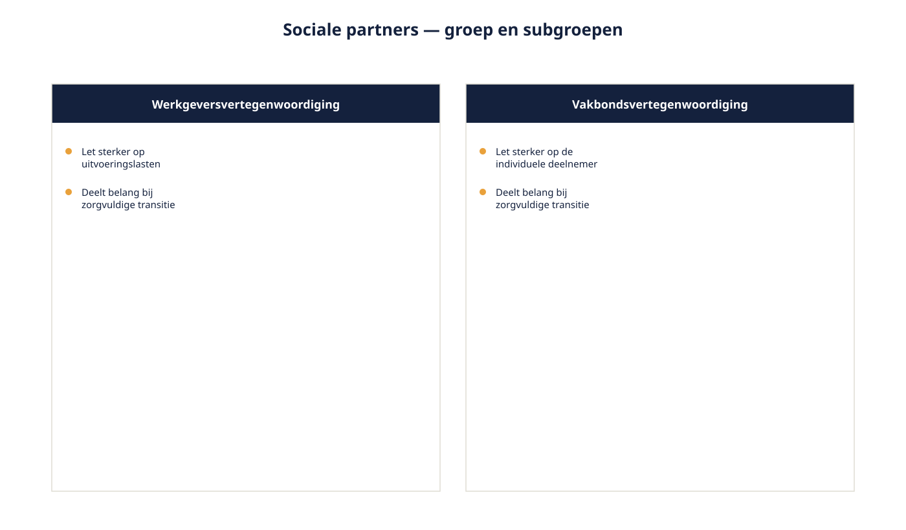
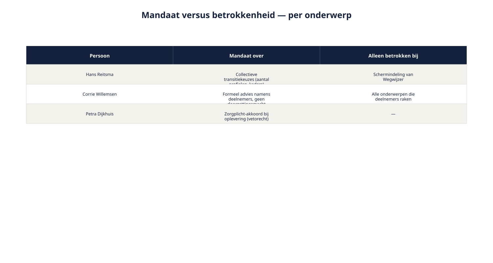
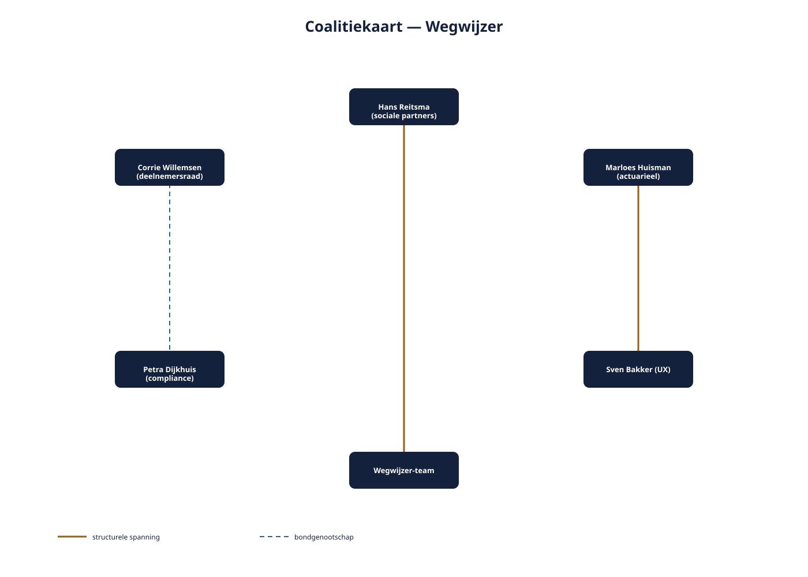

Deel 12 — Elicitation: stakeholderanalyse gevorderd
Reader · Ductus-cursus Requirements engineering · niveau 2 (professional) · deel 12 van 22
Cursus Requirements Engineering — Ductus. Deze cursus bereidt voor op de CPRE-certificering van IREB en is uitdrukkelijk geen vervanging van het officiële syllabus- en examenmateriaal.
Leerdoelen
Na dit deel kun je:
- het verschil toepassen tussen een stakeholdergroep als geheel en de subgroepen en individuen daarbinnen;
- mandaat onderscheiden van betrokkenheid, en per onderwerp vaststellen wie werkelijk mag beslissen;
- coalities en tegengestelde allianties tussen belanghebbenden in kaart brengen;
- beïnvloedingstechnieken toepassen op belanghebbenden die buiten je gezag vallen;
- een stakeholderkaart opstellen voor een programma als Wegwijzer.
12.1 "Je kunt niet zomaar met de sociale partners praten"
Ruben plant, gewend aan de aanpak uit het Nabestaandenloket, een workshop met "de sociale partners" om input op te halen voor Wegwijzer. Bram Kessels, de programmamanager, houdt hem tegen: "Je kunt niet zomaar met 'de sociale partners' praten. Dat zijn geen twee mensen die je uitnodigt. Dat zijn werkgevers en vakbonden, met elk hun eigen achterban, hun eigen interne overleg, en een formeel mandaat dat maar voor bepaalde onderwerpen geldt."
Dit is het eerste scherpe verschil met niveau 1. Bij het Nabestaandenloket was elke belanghebbende een individu met een naam en een duidelijke rol. Bij Wegwijzer zijn sommige "belanghebbenden" uit het casusdossier eigenlijk groepen met een eigen interne structuur — en die structuur negeren betekent dat je met de verkeerde persoon over het verkeerde onderwerp praat, op het verkeerde moment.
12.2 Van individu naar stakeholdergroep
De macht/belang-matrix uit deel 3 (niveau 1) plaatst één stip per belanghebbende. Voor een groep als "sociale partners" is dat een versimpeling die op programmaniveau te grof is. Een stakeholdergroep verdient twee analyseslagen:
De groep naar buiten toe. Hoe treedt de groep op als geheel — welke positie, welk mandaat, welke formele status heeft de groep ten opzichte van het programma?
De subgroepen en individuen naar binnen toe. Wie zit er in de groep, wat zijn hun onderlinge verschillen, en wie is de facto woordvoerder voor welk onderwerp? Bij de sociale partners: werkgeversvertegenwoordiging en vakbondsvertegenwoordiging hebben overlappende maar niet identieke belangen — beiden willen een zorgvuldige transitie, maar een werkgeversvertegenwoordiger let sterker op uitvoeringslasten, een vakbondsvertegenwoordiger sterker op de individuele deelnemer.

Deze tweeslag voorkomt twee tegenovergestelde fouten. De eerste fout is een groep behandelen als monolithisch blok, waardoor interne verschillen — en de kans om ze productief te gebruiken — verloren gaan. De tweede fout is een groep helemaal negeren als geheel en alleen met individuen praten, waardoor je het risico loopt dat een individueel standpunt wordt aangezien voor een formeel groepsstandpunt terwijl dat niet zo is.
12.3 Mandaat versus betrokkenheid
Hans Reitsma heeft namens de sociale partners een formeel mandaat over de collectieve keuzes in het transitieplan — bijvoorbeeld hoeveel risicoprofielen er beschikbaar worden gesteld. Hij heeft géén mandaat over de schermindeling van Wegwijzer; daarover kan hij wel iets vinden, maar zijn mening is dan betrokkenheid, geen zeggenschap.
Dit onderscheid — mandaat (formele zeggenschap over een specifiek onderwerp) versus betrokkenheid (belang bij of mening over een onderwerp, zonder zeggenschap) — is een verfijning van de macht/belang-matrix uit deel 3. Macht was daar één algemene inschatting; mandaat is onderwerpsgebonden: dezelfde persoon kan over het ene onderwerp beslissen en over het andere alleen meedenken.
Praktische vraag bij elke requirement op programmaniveau: wie heeft hier mandaat, en wie is hier alleen betrokken? Een requirement die aan de verkeerde partij wordt voorgelegd voor akkoord — betrokkenheid aangezien voor mandaat, of andersom, mandaat genegeerd omdat het "maar een detail" leek — leidt op programmaniveau tot vertraging die zich moeilijk laat herstellen: een besluit dat buiten het juiste mandaat om is genomen, moet vaak alsnog formeel worden bekrachtigd, met alle tijdverlies van dien.

Vaststellen wie mandaat heeft: niet aannemen, navragen
Net als bij de macht/belang-matrix in deel 3 geldt hier: toetsen, niet raden. De vraag is concreet te stellen aan de belanghebbende zelf of aan de programmamanager: "over welke beslissingen binnen Wegwijzer heeft u zeggenschap, en welke zijn aan iemand anders?" Dit voorkomt een veelvoorkomende valkuil: aannemen dat wie het hardst spreekt ook het meeste mandaat heeft. Dat is regelmatig niet zo.
12.4 Coalities en tegengestelde allianties
Op programmaniveau, met meer belanghebbenden en meer onderlinge relaties, wordt het zichtbaar dat belanghebbenden elkaar niet alleen tegenspreken (deel 3, tegenstrijdige belangen) maar ook versterken. Twee patronen zijn het bekijken waard.
Coalities. Corrie Willemsen (deelnemersraad) en Petra Dijkhuis (compliance) delen, vanuit heel verschillende posities, een belang bij begrijpelijkheid en zorgvuldigheid — Corrie omdat ze de deelnemer vertegenwoordigt, Petra omdat onbegrijpelijkheid een zorgplichtrisico is. Wie dit ziet, kan hun input strategisch combineren in plaats van los te behandelen: een voorstel dat beide overtuigt, staat sterker dan twee losse akkoorden.
Tegengestelde allianties. Marloes Huisman (actuarieel, wil rekenkundige nauwkeurigheid) en Sven Bakker (UX, wil eenvoud) trekken structureel de andere kant op. Dit is geen conflict tussen twee individuen dat "opgelost" moet worden — het is een inherente spanning tussen twee legitieme waarden (nauwkeurigheid en begrijpelijkheid) die bij elk risicoprofiel-gerelateerd onderwerp terugkeert. Het herkennen van dit patroon als structureel, in plaats van als incident, verandert hoe je ermee omgaat: je richt een vaste afwegingsroute in (deel 14) in plaats van elke keer opnieuw te bemiddelen alsof het de eerste keer is.

12.5 Beïnvloeden zonder gezag
Ruben heeft geen gezag over Hans Reitsma, Corrie Willemsen, of zelfs Marloes en Sven (die weliswaar bij Meridiaan werken maar niet aan hem rapporteren). Toch moet hij hun input krijgen, hun conflicten productief maken, en hun akkoord — waar nodig — verkrijgen. Vier technieken die daarbij helpen.
Vroege betrokkenheid. Wie vroeg wordt meegenomen, voelt zich mede-eigenaar van het resultaat en is later minder geneigd zich te verzetten. Dit is geen truc maar een logisch gevolg van hetzelfde principe dat elicitatie draagt (deel 4, niveau 1): mensen die serieus zijn bevraagd, voelen zich gehoord.
Transparantie over overwegingen. Laten zien hóe een afweging tot stand komt — inclusief de opties die zijn afgevallen en waarom — bouwt vertrouwen op, zelfs bij belanghebbenden die het uiteindelijke besluit niet volledig steunen. Dit sluit aan bij de rolgrens uit deel 1 (niveau 1): feiten, opties en consequenties zichtbaar maken, ook als het besluit elders ligt.
Gedeeld belang als gemeenschappelijke taal. Zorgplicht is een belang dat vrijwel elke belanghebbende bij Wegwijzer deelt, zij het vanuit een andere invalshoek. Een verzoek of voorstel dat expliciet naar dat gedeelde belang verwijst, overtuigt sneller dan een verzoek dat alleen de eigen agenda van het Wegwijzer-team benadrukt.
Bruggenbouwers inzetten. Sommige belanghebbenden hebben zelf al een relatie met een partij die voor jou moeilijk te bereiken is. Petra Dijkhuis heeft bijvoorbeeld al een werkrelatie met Hans Reitsma vanuit eerdere compliance-overleggen — haar inzetten als brug kan sneller werken dan een rechtstreekse, onbekende introductie.
12.6 De stakeholderkaart voor Wegwijzer
Het resultaat van dit deel is een uitgebreide stakeholderkaart, die de macht/belang-matrix uit deel 3 (niveau 1) niet vervangt maar aanvult met drie nieuwe lagen: groep versus subgroep, mandaat versus betrokkenheid, en coalities versus spanningen.
| Belanghebbende(groep) | Subgroepen/individuen | Mandaat over | Alleen betrokken bij | Coalitie met | Structurele spanning met |
|---|---|---|---|---|---|
| Sociale partners | Werkgevers, vakbonden | Collectieve transitiekeuzes (aantal profielen, kaders) | Schermindeling, UX-details | — | Wegwijzer-team (tempo) |
| Deelnemersraad (Corrie) | — | Formeel advies, geen doorzettingsmacht | Alle onderwerpen die deelnemers raken | Petra (compliance) | Marloes (bij complexiteit) |
| Compliance (Petra) | — | Zorgplicht-akkoord bij oplevering (vetorecht) | — | Corrie | — |
| Actuarieel (Marloes) | — | Inhoud van de rekenregels | — | — | Sven (UX) |
| UX (Sven) | — | Vormgeving van de uitleg | — | — | Marloes |

Wat verandert er als je iteratief werkt?
Een stakeholderkaart op programmaniveau is geen eenmalige foto. Coalities kunnen verschuiven naarmate het programma vordert — bijvoorbeeld als Marloes en Sven, na een paar iteraties van gezamenlijk prototypen (deel 13), een gedeeld beeld ontwikkelen dat hun aanvankelijke spanning vermindert. Een lichte, periodieke herijking van de kaart (bijvoorbeeld bij elke release-mijlpaal, niet elke sprint) houdt hem bruikbaar zonder hem tot een zware, aparte activiteit te maken.
Samenvatting
- Een stakeholdergroep verdient twee analyseslagen: de groep naar buiten toe, de subgroepen en individuen naar binnen toe.
- Mandaat (zeggenschap over een specifiek onderwerp) is iets anders dan betrokkenheid (belang zonder zeggenschap) — en verschilt per onderwerp, niet alleen per persoon.
- Coalities versterken elkaars input; structurele spanningen keren telkens terug en vragen een vaste afwegingsroute, geen ad-hoc bemiddeling.
- Beïnvloeden zonder gezag: vroege betrokkenheid, transparantie over overwegingen, een gedeeld belang als gemeenschappelijke taal, bruggenbouwers inzetten.
- De stakeholderkaart op programmaniveau bouwt voort op de macht/belang-matrix van niveau 1, met drie nieuwe lagen.
Begrippen
stakeholdergroep · subgroep · mandaat · betrokkenheid · coalitie · structurele spanning · beïnvloeding · stakeholderkaart
Leeswijzer naar het volgende deel
Deel 13 gaat over techniekkeuze op programmaniveau: welke elicitatietechnieken passen bij groepen die te groot, te formeel of te verspreid zijn voor de technieken uit niveau 1.